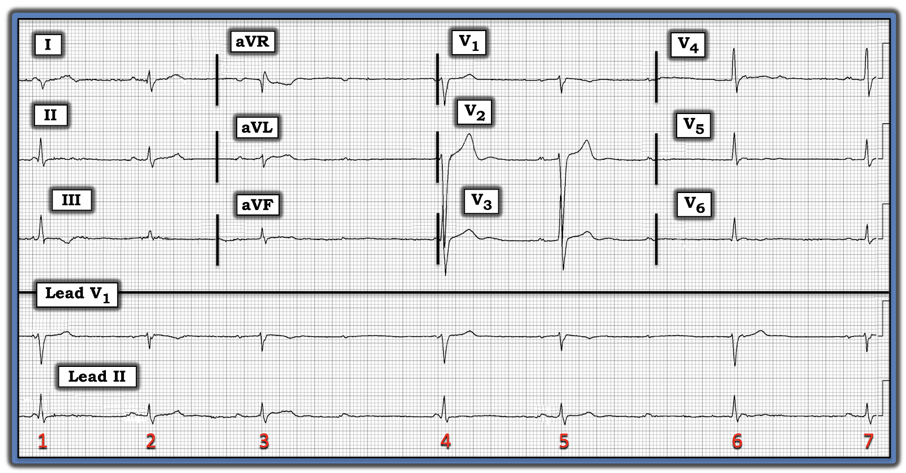
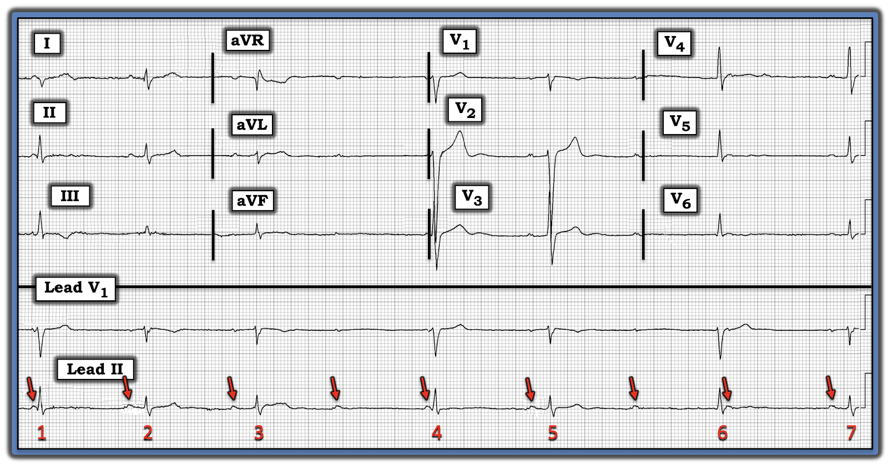
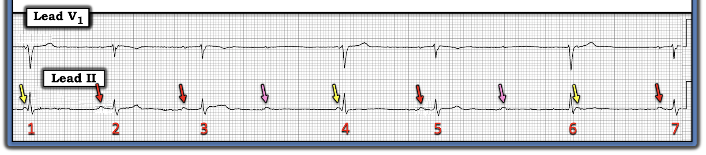
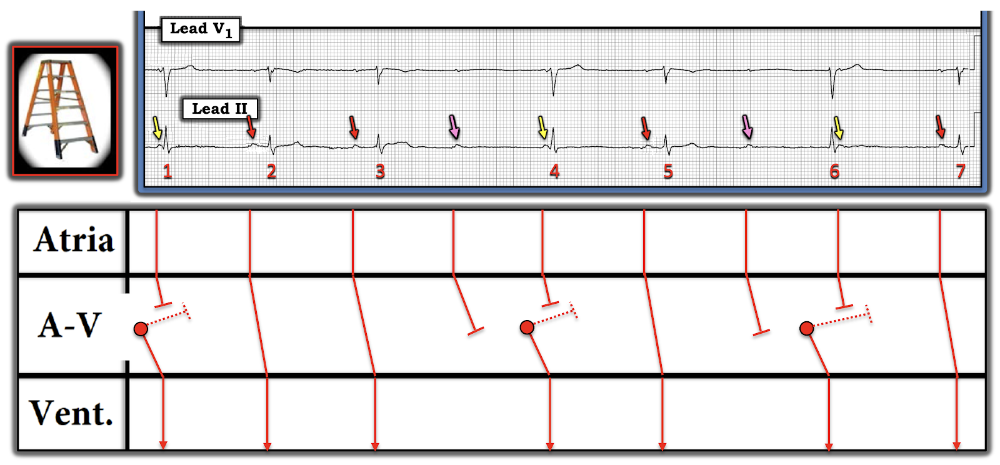
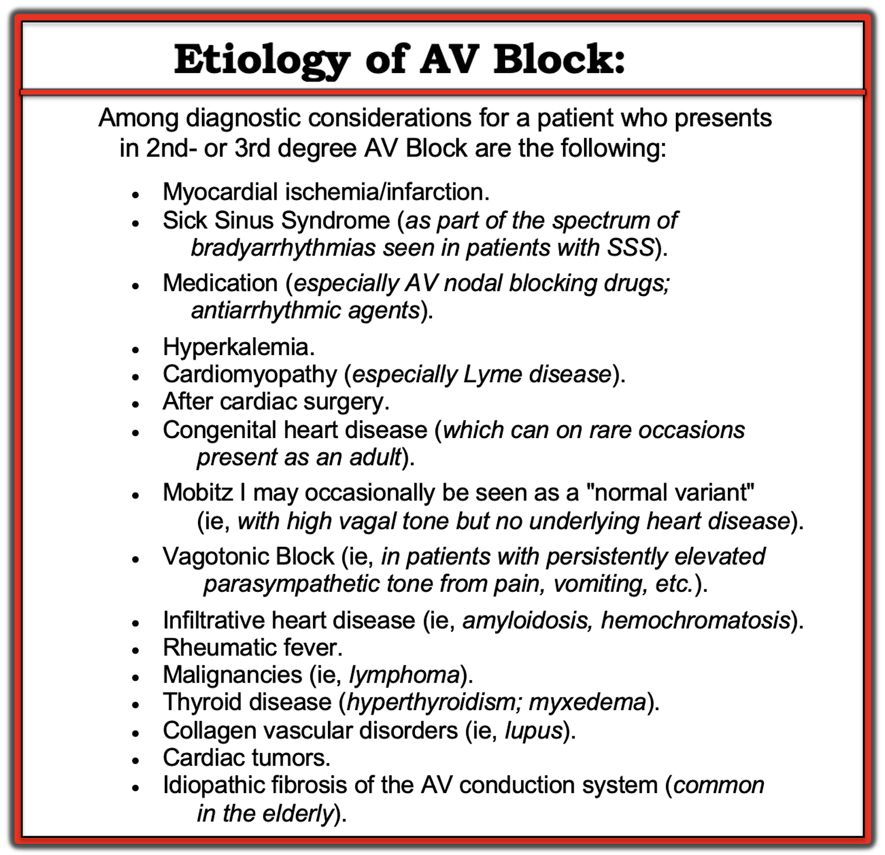

ECG Blog #307 — Không triệu chứng, nhưng nhịp chậm
Điện tâm đồ ở Hình-1 — được ghi ở một người đàn ông ngoài 40 tuổi, được chuyển tới ED (Emergency Department — khoa Cấp cứu) vì "nhịp chậm". Bệnh nhân không có triệu chứng vào thời điểm ghi điện tâm đồ này.
- BẠN sẽ đọc nhịp này như thế nào?
- Bạn cân nhắc những chẩn đoán nào?


Suy nghĩ của tôi về Hình-1:
Áp dụng một cách trực giác Cách tiếp cận Ps, Qs, 3R để đánh giá nhịp ở Hình-1 (Xem ECG Blog #185) — ấn tượng ban đầu của tôi về bản ghi này (mà tôi có được trong vòng ~15 giây đầu tiên khi nhìn điện tâm đồ này) — như sau:
- Có một nhịp chậm, trên thất (QRS hẹp) .
- Nhịp này không đều.
- Có một số thay đổi về hình dạng QRS (thấy rõ nhất ở dải nhịp chuyển đạo dài V1).
- Sóng P có hiện diện — và ít nhất một số sóng P này không được dẫn truyền.
- Khi liếc nhanh tổng thể bản ghi 12 chuyển đạo này — dường như không có thay đổi ST-T cấp (ít nhất là không có gì có thể cần thông tim hoặc điều trị tiêu sợi huyết ngay).
- LƯU Ý: Mục tiêu lâm sàng của lần nhìn nhanh ban đầu vào bản ghi hôm nay là để xem CÓ ưu tiên nào cần xử trí ngay hay không. Dù vậy — vì bệnh nhân này không có triệu chứng (do đó ổn định huyết động) — nhiều khả năng anh ấy đã ở trong nhịp này ít nhất một khoảng thời gian — và theo định nghĩa, điều này cho chúng ta thời gian để phân tích kỹ hơn.
ĐIỂM THEN CHỐT (PEARL) #1: Khi áp dụng Cách tiếp cận Ps, Qs, 3R — tôi nhận thấy việc đơn giản là xác định tất cả sóng P là vô cùng quý giá để dẫn tôi tới chẩn đoán đúng.
- Dùng compa đo (calipers) giúp rất nhiều trong việc xác định tất cả các sóng P (kể cả những sóng P bị che khuất một phần hay hoàn toàn trong QRS hoặc sóng ST-T của một số nhát).
- Sóng P nhỏ ở mọi chuyển đạo trong Hình-1. Dù vậy — chúng thấy RÕ NHẤT ở dải nhịp chuyển đạo dài II. Đặt compa đo bằng khoảng P-P giữa 2 sóng P bất kỳ thấy rõ ràng ở dải nhịp chuyển đạo dài II — cho phép bạn dễ dàng "dò bước" khoảng này suốt dải nhịp (các mũi tên ĐỎ ở Hình-2).
ĐIỂM THEN CHỐT (PEARL) #2: Thường gặp sự không đều nhẹ của khoảng P-P đi kèm với nhịp xoang chậm (bất kể có hay không có blốc AV ở một mức độ nào đó). Nhận biết loạn nhịp xoang này giúp tìm ra những sóng P xoang có thể bị che khuất một phần (tức là, như sóng P đến sớm hơn dự kiến thấy ngay sau phức bộ QRS của nhát #6 ở Hình-2).
THỬ THÁCH: Hãy nhìn các mũi tên ĐỎ ở Hình-2 đánh dấu tất cả sóng P xoang trong dải nhịp này:
- Có sóng P nào trong số này được dẫn truyền xuống thất không? NẾU có — Những sóng P nào ở Hình-2 có vẻ được dẫn truyền?
- Có sóng P nào mà bạn biết chắc là không được dẫn truyền không?


TRẢ LỜI:
Để cho rõ, ở Hình-3 — tôi đã đổi màu các mũi tên trên dải nhịp chuyển đạo dài (từ Hình-2) — để đánh dấu những sóng P rất có thể không được dẫn truyền.
- 3 sóng P được đánh dấu bằng mũi tên VÀNG ở Hình-3 chắc chắn không được dẫn truyền. 2 mũi tên đầu (tức là các mũi tên VÀNG phía trước nhát #1 và #4) — đánh dấu những sóng P có khoảng PR quá ngắn để dẫn truyền.
- Mũi tên VÀNG thứ 3 ở Hình-3 đánh dấu một sóng P xuất hiện ngay sau nhát #6. Chúng ta biết sóng P này cũng không được dẫn truyền — vì rõ ràng nó rơi vào thời kỳ trơ tuyệt đối.
- Trong 6 sóng P còn lại — 2 sóng P được đánh dấu bằng mũi tên HỒNG (xuất hiện gần chính giữa nhát #3-4 và giữa nhát #5-6) — rất khó được dẫn truyền, vì điều này sẽ đòi hỏi một khoảng PR dài quá mức.
- Mũi tên ĐỎ đánh dấu 4 sóng P còn lại. Mỗi sóng P trong 4 sóng P còn lại này có thể được dẫn truyền.
ĐIỂM THEN CHỐT (PEARL) #3: Có lẽ manh mối TỐT NHẤT cho thấy một sóng P có được dẫn truyền xuống thất — là khi thấy cùng một khoảng PR trước nhiều nhát.
- Ở Hình-3 — khoảng PR đứng trước các nhát #2, 5 và 7 giống hệt nhau. Do đó — mỗi sóng P phía trước các nhát này đều được dẫn truyền xuống thất. Tôi đo khoảng PR này dài hơn 1 ô lớn một chút (tức là ~0.22 giây) — như vậy, phù hợp với blốc AV độ 1.
- CÂU HỎI: Chẳng phải khoảng PR đứng trước nhát #3 hơi dài hơn khoảng PR trước nhát #2 sao?


Tổng Hợp Lại Tất cả:
Về cơ bản, chúng ta đã "giải" xong rối loạn nhịp ở Hình-3:
- Nhịp nền là nhịp chậm xoang kèm loạn nhịp xoang (với tần số thất chung ~50/phút). Khoảng PR của các nhát dẫn truyền từ xoang kéo dài tới 0.22 giây — như vậy có blốc AV độ 1.
- Có một dạng blốc AV độ 2 — vì các sóng P đúng lúc được đánh dấu bằng mũi tên HỒNG ở Hình-3 không dẫn truyền mặc dù có thừa cơ hội để làm vậy.
- Loại blốc AV độ 2 là Mobitz I (Wenckebach AV) — vì ở nhóm nhát duy nhất có 2 sóng P liên tiếp có dẫn truyền, khoảng PR tăng dần cho tới khi một nhát bị rớt (tức là khoảng PR trước nhát #3 dài hơn khoảng PR trước nhát #2 — và rồi sóng P đúng lúc kế tiếp được đánh dấu bằng mũi tên HỒNG sau nhát #3 không được dẫn truyền).
- Các đặc điểm khác phù hợp với dạng Mobitz I của blốc AV độ 2 ở Hình-3 gồm: i) Thống kê = Thực tế lâm sàng là hơn 90-95% mọi blốc AV độ 2 thuộc loại Mobitz I; ii) Phức bộ QRS hẹp (trong khi QRS thường rộng ở Mobitz II); và, iii) Các nhát dẫn truyền từ xoang biểu hiện blốc AV độ 1 (trong khi với Mobitz II, khoảng PR của các nhát được dẫn truyền nhiều khả năng bình thường hơn).
- Về lâm sàng — Tầm quan trọng của việc phân biệt dạng Mobitz I với Mobitz II của blốc AV độ 2 — là ở chỗ bệnh nhân Mobitz II nhiều khả năng cần máy tạo nhịp hơn hẳn (Xem các LIÊN KẾT và PHẦN BỔ SUNG bên dưới để biết thêm về chẩn đoán điện tâm đồ và ý nghĩa lâm sàng của các blốc AV).
Vậy các nhát #1, 4 và 6 là gì?
Chúng ta đã nhấn mạnh rằng các sóng P được đánh dấu bằng mũi tên VÀNG phía trước nhát #1 và #4 có khoảng PR quá ngắn để dẫn truyền. Không có sóng P nào đứng ngay trước nhát #6. Do đó — không nhát nào trong số này là nhát dẫn truyền từ xoang.
- Vì phức bộ QRS của các nhát #1, 4 và 6 hẹp — các nhát này không có nguồn gốc từ thất.
- Bằng phương pháp loại trừ, vì các nhát #1,4,6 không phải dẫn truyền từ xoang cũng không có nguồn gốc từ thất — chúng phải là các nhát "thoát" phát sinh hoặc từ nút AV hoặc từ bó His. Vì khoảng R-R đứng trước nhát #4 và #6 dài (tức là ~10 ô lớn — tương ứng với tần số thoát là ~30/phút) — các nhát này có lẽ xuất phát từ vị trí "thấp hơn" trong hệ thống dẫn truyền (tức là từ bó His).
- Ủng hộ cho nguồn gốc từ bó His của các nhát thoát này — là hình dạng QRS khác biệt rõ rệt của các nhát #1, 4 và 6 trên các dải nhịp chuyển đạo dài. Mặc dù hình dạng QRS của nhát thoát bộ nối có thể khác nhẹ so với hình dạng QRS của nhát dẫn truyền từ xoang — thường không có sự khác biệt hình dạng rõ rệt như chúng ta thấy ở Hình-3.
ĐIỂM THEN CHỐT (PEARL) #4: Mặc dù khá dễ để biết sóng P nào có (và không) được dẫn truyền xuống thất ở Hình-3 — đôi khi việc xác định điều này lại khá khó. Trong những trường hợp đó — nhận ra sự thay đổi nhẹ về hình dạng QRS có thể là manh mối quan trọng cho biết nhát nào là nhát "thoát" không được dẫn truyền — và biết điều này có thể giúp rất nhiều cho việc chẩn đoán nguyên nhân của nhịp (Xem ECG Blog #63 để thấy một ví dụ áp dụng Điểm then chốt này).
ĐIỂM THEN CHỐT (PEARL) #5: Điều quan trọng là nhận ra có phân ly nhĩ thất thoáng qua ở Hình-3. Nghĩa là — Không sóng P nào được đánh dấu bằng mũi tên VÀNG có liên quan tới các phức bộ QRS kế cận (vì không sóng P nào trong số này được dẫn truyền xuống thất).
- Điều này minh họa rằng phân ly nhĩ thất không giống với blốc AV hoàn toàn. Việc có không dưới 4 sóng P ở Hình-3 được dẫn truyền xuống thất loại trừ khả năng blốc AV hoàn toàn (trong đó không sóng P nào được dẫn truyền xuống thất).
- Để biết thêm về phân biệt giữa phân ly nhĩ thất với blốc AV hoàn toàn — Xem ECG Blog #191.
===========================
Giản đồ bậc thang (Laddergram):
Để cho rõ — tôi đã vẽ một giản đồ bậc thang ở Hình-4 cho ca hôm nay, nhằm minh họa cơ chế của rối loạn nhịp này.


============================
KẾT LUẬN CA BỆNH:
Đáng ngạc nhiên là người đàn ông khoảng 40 tuổi trong ca hôm nay không có triệu chứng vào thời điểm anh ấy đến viện với điện tâm đồ ban đầu (mà tôi in lại ở Hình-5).
- Có lẽ — lý do anh ấy đến ED là vì có người nhận thấy mạch chậm và không đều.
TẠI SAO bệnh nhân này đến viện với Mobitz I không triệu chứng?
Việc bệnh nhân đến viện với nhịp chậm đáng kể và blốc AV độ 2 mà không có bất kỳ triệu chứng nào là không thường gặp — nhất là ở nhóm người trưởng thành trẻ tuổi như bệnh nhân hôm nay. Vì vậy — cách biểu hiện của ca này phải đặt ra một số câu hỏi:
- Bệnh nhân có thật sự không có triệu chứng? Nhiều bệnh nhân phủ nhận hoặc lờ đi triệu chứng — vì vậy khai thác bệnh sử kỹ lưỡng với hy vọng phát hiện manh mối về nguyên nhân của nhịp là điều thiết yếu.
- Nguyên nhân có khả năng nhất của nhịp chậm kèm blốc AV độ 2 Mobitz I — dường như là một nhồi máu cơ tim mà bằng cách nào đó bệnh nhân không hề hay biết. Mặc dù điện tâm đồ ở Hình-5 không cho thấy dấu hiệu rõ ràng của nhồi máu mới hoặc cấp — vẫn có một số dấu hiệu điện tâm đồ tinh tế. Bao gồm: i) Một gợi ý ST dạng vòm (coving) và chênh lên ở 1 phức bộ QRST duy nhất mà chúng ta thấy ở chuyển đạo aVL (tương ứng với nhát #3); và, ii) Sóng R cao hơn dự kiến ở chuyển đạo V3. 2 dấu hiệu này có thể phù hợp với nhồi máu sau-bên mới — dù chúng hoàn toàn không có tính khẳng định. Các chuyển đạo khác không cho thấy gì hơn ngoài sóng ST-T dẹt không đặc hiệu.
- Các bệnh cảnh khác cần cân nhắc có thể gây blốc AV độ 2 Mobitz I được trình bày ở Hình-6. Nếu khai thác bệnh sử kỹ lưỡng và đánh giá toàn diện bệnh nhân này không gợi ý bệnh cảnh nào trong số đó — nên cân nhắc thông tim, tìm bệnh mạch vành "thầm lặng" tiềm ẩn có thể điều trị bằng tái tưới máu.
- Nếu không tìm thấy gì "sửa được" — cuối cùng có thể cần máy tạo nhịp nếu tần số thất chung tiếp tục chậm thêm và/hoặc nếu xuất hiện triệu chứng.


=======================
Lời cảm ơn: Xin cảm ơn Mubarak Al-Hatemi (từ Qatar) đã chia sẻ ca bệnh và bản ghi này.
=======================
=================================
Tìm hiểu THÊM về Chẩn đoán Blốc AV/Phân ly nhĩ thất:
- ECG Blog #185 — Ôn lại Cách tiếp cận Ps, Qs, 3R để đọc nhịp.
- ECG Blog #188 — Ôn lại Cách đọc (và vẽ) Giản đồ bậc thang.
- ECG Blog #63 — Ôn lại một ca Mobitz I kèm nhịp thoát bộ nối.
- ECG Media Pearl #4 (4:30 phút Audio) — Các blốc AV & KHI NÀO nên nghi Mobitz I — Xem ECG Blog #186 —
- ECG Media Pearl #6 (12:00 phút Video) — ECG Blog #189 — Loại blốc AV nào? Phân tích chi tiết rối loạn nhịp đầy thử thách này (kèm Video điện tâm đồ phân tích từng bước giản đồ bậc thang phức tạp này).
- ECG Media Pearl #8 (8:20 phút Video) — ECG Blog #191 — Phân biệt phân ly nhĩ thất với blốc AV hoàn toàn.
- ECG Media Pearl #9 (5:40 phút Video) — ECG Blog #192 — Ôn lại 3 nguyên nhân gây phân ly nhĩ thất.
- ECG Media Pearl #19 (5:00 phút Audio) — ECG Blog #202 — Cách nhanh chóng loại trừ blốc AV hoàn toàn trong vòng vài giây!
- ECG Media Pearl #41 (4:00 phút Audio) — ECG Blog #224 — Ôn lại CÁCH nhận ra Mobitz I trong vòng vài giây khi đang có STEMI thành dưới.

PHẦN BỔ SUNG (23/5/2022):
Video điện tâm đồ (ECG Video) dài 15 phút này — Ôn lại 3 loại blốc AV độ 2 — cùng với — thuật ngữ khó định nghĩa blốc AV "mức độ cao". Tôi bổ sung tài liệu này bằng 2 tài liệu PDF phát tay sau đây.
- Section 2F (6 trang = Câu trả lời "ngắn") trong cuốn ECG-2014 Pocket Brain của tôi cung cấp phần ôn tập nhanh bằng văn bản về các blốc AV (Tải miễn phí).
- Section 20 (54 trang = Câu trả lời "dài") trong cuốn ACLS-2013-Arrhythmias Expanded Version của tôi thảo luận chi tiết các blốc AV LÀ GÌ — và không phải là gì! (Tải miễn phí).
- Mobitz I ( = Wenckebach AV).
- Mobitz II.
- Blốc AV độ 2 kèm dẫn truyền AV 2:1.